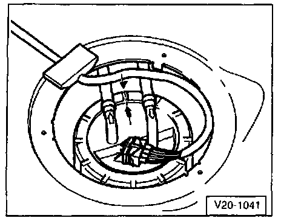

Fuel Tank Removal and Installation
Fuel Filter and Fuel Tank with Attachments:Removing and Installing:

1. Cap
- Replace seal if damaged
2. Retaining ring
3. Rubber cup
4. O-ring
- Replace if damaged
5. Gravity valve
- To remove, unclip valve and remove from filler pipe upward and out
- Check valve for flow-through Vertical: valve open Tipped 45°: valve closed
6. Vent pipe
- To Evaporative Emission (EVAP) Canister
7. Ground (GND) connection
8. Vent valve
- Checking See Fig. 2
- To remove pull safety catch lightly inward -arrow- and remove valve
9. Return line
- Color: blue
- From fuel rail
10. Union nut
- Remove and install with tool 3217
11. Hose guide
12. Flange
- Note installation position on fuel tank Fig. 1
13. Supply hose
14. Sealing ring
- Installing: lubricate with fuel
- Replace if damaged
15. Return hose
16. Fuel Pump (FP) (G6)
- Fuel Pump (G6) and Fuel Level Sensor (G) -17- comprise Fuel Pump (FP) Module
17. Fuel Level Sensor (G)
- Sensor and Fuel Pump (FP) (G6) -16- comprise Fuel Pump (FP) Module
18. Strainer
19. Securing strap
- Note differing lengths
20. Bracket
- For securing straps
21. 25 Nm (18 ft lb)
22. Fuel tank
- Removing: support with VAG 1383 A transmission jack
23. Supply pipe
- Color: black
- To fuel rail
24. Fuel filter
- Installation: arrow points in direction of flow
25. Retaining clip
26. 20 Nm (15 ft lb)
27. Bracket
- For fuel filter
28. Rubber buffer
29. Spring clip
30. Spacer
31. 10 Nm (7 ft lb)
Fig. 1:

Fig. 1 Installation position of flange cap Fuel Pump (FP) Module
- Marking on flange must align with marking on fuel tank -arrows-.
Fig. 2:

Fig. 2 Checking vent valve
- Lever in rest position: Closed
- Lever pushed in direction of arrow: Open